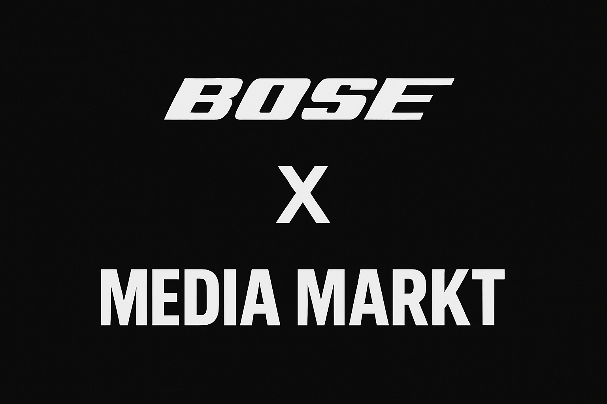

Trends sind Lärm.
Jeden Monat gibt es einen neuen Sound, ein neues Format, einen neuen Trend, dem alle hinterherlaufen. Ich kenne Accounts, die drei Jahre lang jeden Trend mitgemacht haben — und heute dieselbe Follower-Zahl haben wie damals. Trends bringen Reichweite. Storytelling bringt Bindung. Das ist kein Widerspruch — aber die meisten verwechseln beides.
Ich habe früh verstanden: Wenn ich morgens aufwache und mein erster Gedanke ist „Was ist heute gerade viral?" — dann habe ich bereits verloren. Ich produziere dann für den Algorithmus, nicht für Menschen. Und Algorithmen ändern sich. Menschen nicht.
Der Algorithmus zeigt Leuten, was sie wollen. Gute Geschichten zeigen Leuten, was sie brauchen. Das ist der Unterschied.
Was Storytelling im Content wirklich bedeutet
Es geht nicht darum, eine emotionale Reise mit dramatischer Musik zu inszenieren. Es geht darum, dass jedes Video eine klare Antwort auf eine unsichtbare Frage liefert: Warum sollte mich das interessieren?
Die stärksten Videos, die ich produziert habe — für Kunden und für mich selbst — hatten nicht die besten Schnitte oder die teuerste Kamera. Sie hatten eine Spannung. Einen Moment, wo der Zuschauer dachte: Das kenne ich. Das fühle ich auch.
- Einstieg über Konflikt, nicht über Kontext: Fang nicht mit „Heute erkläre ich euch…" an. Fang mit dem Problem an. Mitten drin.
- Konsequenz sichtbar machen: Nicht „Ich habe das gemacht", sondern „Das hat sich dadurch verändert."
- Spezifität schlägt Allgemeinheit: „Ich habe 10.000 Follower gewonnen" ist weniger stark als „Nach 3 Wochen hat mich mein erstes Angebot über DM erreicht."

Was ich aus Kundenprojekten gelernt habe
Wenn ich anfange, mit einem Kunden zu arbeiten, ist die erste Frage nicht „Was willst du zeigen?" Die erste Frage ist: „Was willst du, dass die Leute fühlen?"
Ahmed Bannout wollte Vertrauen aufbauen — Menschen, die nicht wissen, ob Drohnenreinigung für ihr Gebäude sinnvoll ist. Ole Belisar wollte Authentizität — kein Fitness-Hochglanz, sondern ehrliche Fortschrittsgeschichten. Darian Wiegand wollte Transformation — sichtbar machen, was möglich ist, wenn man konsequent bleibt.
In jedem Fall war die Antwort kein Trend. Es war eine Geschichte, die nur sie erzählen konnten. Das ist der einzige Wettbewerbsvorteil, den kein Algorithmus, keine KI und kein Konkurrent kopieren kann.
Wie ich heute Content entwickle
Ich fange nicht mit dem Skript an. Ich fange mit einer Emotion an. Was soll nach dem Video beim Zuschauer hängen bleiben? Motivation? Neugier? Das Gefühl, verstanden zu werden?
Alles andere — Format, Länge, Ton, Schnitt — ist Technik, die dieser Emotion dient. Wenn die Technik die Emotion überwältigt, hab ich etwas falsch gemacht.
Der beste Schnitt ist der, den niemand bemerkt. Das beste Storytelling ist das, das sich nicht wie Content anfühlt.